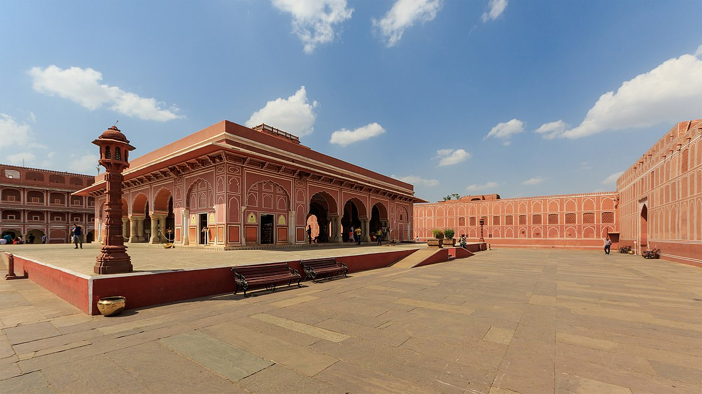
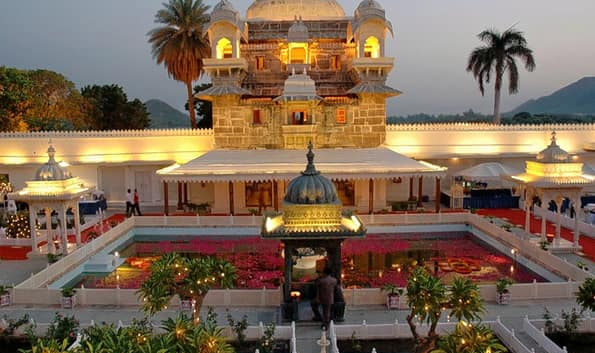
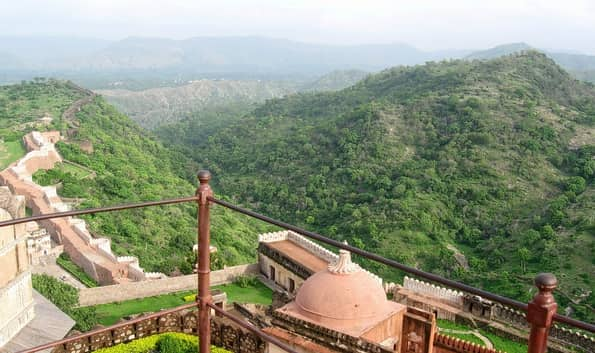
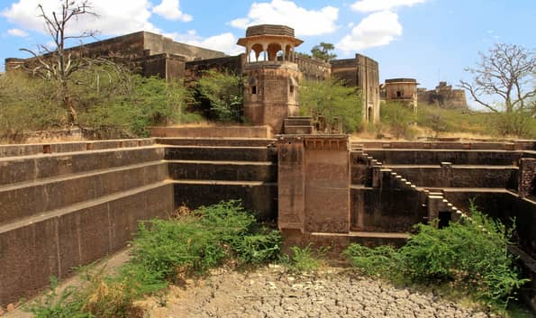

The City Fort Palace is situated near the Kota Barrage and overlooks the beautiful Chambal River. The City Fort Palace has a museum which contains an impressive collection of artefacts belonging to the Kota rulers. The main entrance to the City Fort Palace is through the Naya Darwaza. The Maharao Madho Singh Museum lies to the right of the City Fort complex. The Maharao Madho Singh Museum has a very interesting collection of frescoes, miniature paintings, armoury and artistic items owned by the Kota rulers.
KOTA AND BUNDI
PLACES TO VISIT
01 City Fort Palace

02 Jagmandir Palace

The Jagmandir Palace is another one of the tourist attractions in Kota. The Jagmandir Palace was built by one of the queens of Kota in 1740 and is situated in the middle of the Kishore Sagar Lake. The Kishore Sagar Lake is an artificial lake and is well known for its scenic beauty.
03 Garadia Mahadev Temple

Garadia Mahadev Temple is located at around five hundred feet at an ordain distance from the sea level near the gorge through which the Chambal river flows. On either side of the temple lies colossally huge gigantic cliffs.
The sway of the wind seems to a symbolic Shiv sutras into the ears of the devotees that eventually arouse them. Most of the rituals in this temple are carried on by the local pundits who generally reside in the shrine till 5.30 pm.
04 Chambal Garden

The Chambal Garden is situated on the banks of the River Chambal. The River Chambal is one of the major tourist attractions of the city of Kota. A number of palaces and temples are built on its banks and are a major draw for tourists from all over the country and the world.
05 Taragarh Fort

One of the best tourist places to visit in Rajasthan is the Taragarh Fort or the Star Fort in Bundi. The fort was constructed in 1534 AD on a hillside. The fort has three gateways called the Laxmi Pol, the Phuta Darwaza and Gagudi ki Phatak. Today, most parts of the fort are in a dilapidated condition. However, it still looks majestic and is the most impressive monument in Bundi.
06 Badal Mahal

Badal Mahal is situated within the Taragarh Fort. The beautiful palace is known for its architectural grandeur and its beautiful paintings and murals. The palace is a major tourist attraction in Bundi and attracts a large number of domestic and foreign tourists because of its exquisite paintings. The paintings and murals of Badal Mahal are of particular interest as they depict the influence of China and Chinese culture on this little town.
07 Step Well of Bundi

Bundi is best known for its step wells. These step wells, called Baoris in the local language, were the only source of water for the people of the region, till piped water was provided. There are more than 50 step wells in the region, but only a very few have been maintained.